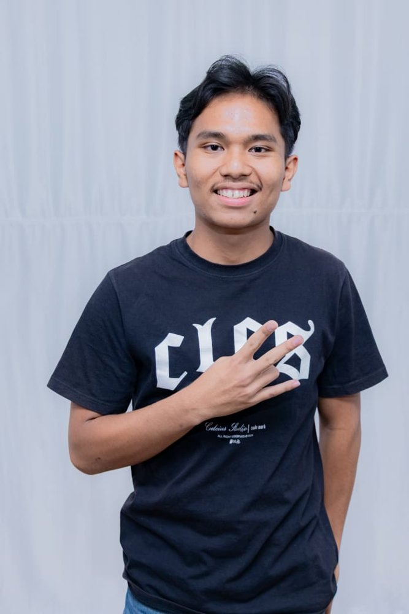

Halo, saya Chaniel.
Saya mahasiswa Sistem Informasi di Universitas Advent Indonesia. Saya suka bermain badminton. Website ini adalah project Web Programming I, tempat kamu bisa mengenal saya lebih jauh dan membaca cerita liburan saya bekerja di asrama.
Lihat biodata
Isi website ini
Biodata
Data diri, pendidikan, dan hobi saya.
My Holiday
Cerita dan foto saat liburan bekerja di asrama.
Kontak
Cara menghubungi saya.